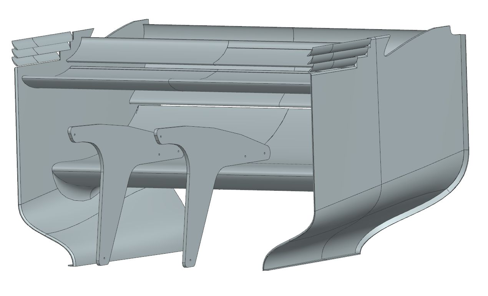

Rear wing: multi-element, endplates and mounts
- Designed the multi-element mainplane and flaps, endplate and swan-neck mounting, plus the internal rib and spar structure inside the wing.
- Delivered +8.5% rear wing downforce and +7% downforce coefficient over the previous package.
- Designed the moulds and jigging fixtures, then built the part: composite layup, mould prep, assembly and sign-off before the car ran.
